Buzz, Woody, and their friends are back as Andy heads off to Cowboy Camp, leaving his toys to their own devices. Things shift into high gear when an obsessive toy collector name Al McWhiggin, owner of Al's Toy Barn, kidnaps Woody. At Al's apartment, Woody discovers that he is a highly valued collectible from a 1950s TV show called "Woody's Roundup." He meets the other prized toys from the show: Jessie the Cowgirl, Bullseye the Horse, and Stinky Pete the Prospector. Andy's toys mount a daring rescue mission, Buzz Lightyear meets his match, and Woody has to decide where he and his heart truly belong.
Of all Andy's toys, Woody seems to be the one who most questions his existence, whether it's as Andy's favorite, a toy destined for the landfill, or a hot collectible. Luckily, Woody comes to his senses before choosing to retire to a museum in Japan.

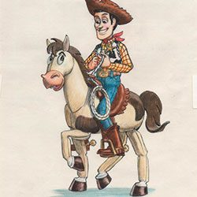

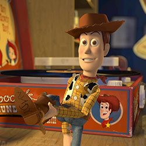
The toy gang's fearless Space Ranger has come down to Earth a bit since his last outing. In fact, Buzz finds himself in an ironic predicament when he must explain to a store display Buzz that they're "just toys."
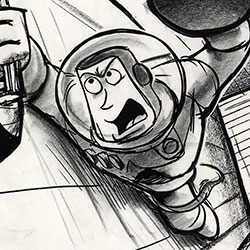
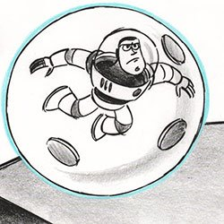


It's no wonder this cowgirl gets the blues. Her beloved owner gave her up to charity, she was imprisoned in a dark storage box for years, and now a cowboy from her past is asking her to take risks just when life was starting to get easy. But, Jessie's a toy at heart and would do anything to give joy to a little girl again.


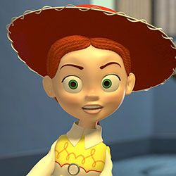
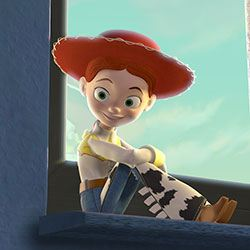
This toy horse rides like the wind, especially when it's Woody giving the command. In a 21st-century real-life version of the 1950s TV episode "Woody's Finest Hour," Bullseye must gallop like crazy to rescue Jessie and Woody from a speeding plane.


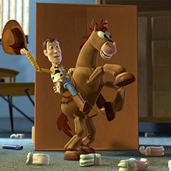

Mr. Potato Head®'s "sweet potato" lives up to her nickname as an affectionate and lovingly overprotective toy. She puts her spud's storage compartment to good use, making sure he has his "angry eyes" handy for the rescue mission, just in case.
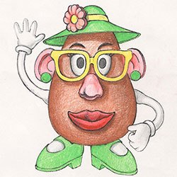
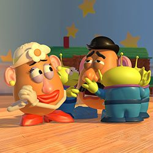


Every toy's worst nightmare has happened to this broken squeak-toy penguin. Relegated to the dusty top shelf in Andy's room, Wheezy finds he's got a friend in Woody, who risks life and limb to come to his pal's res
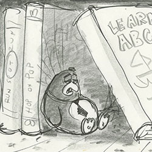
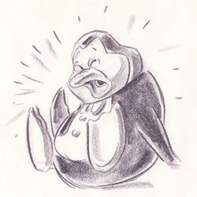


Spending a lifetime on a dime-store shelf while every other toy in the Roundup Gang gets sold can make a toy bitter. When the Prospector's waiting in boxed "mint condition" finally pays off, he won't let anything keep him from immortality.
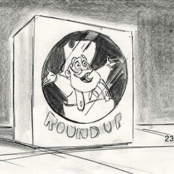


Although Al is surrounded by toys, he has a different point of view than Andy. Al is an adult, not a kid, and his only relationship with toys involves a profit motive. The filmmakers established the distance between their worlds by giving Al a small apartment in an imposing high-rise, where the colors were more drab, the lighting was dim and artificial, and air vents would be seen as escape routes.
For the cast of Toy Story 2, the trip to Al’s Toy Barn was both perilous and otherworldly. Using only modest exaggeration, the filmmakers presented the retail toy store as towering and awe inspiring, especially when viewed from the very low angle of the characters. It also provided Buzz the existential experience of confronting himself, facing hundreds of identical Buzz Lightyears still in their packages.
A crucial story element involved Woody discovering his past life as a TV star. Delving back to the early days of black-and-white television, the Pixar team envisioned Woody’s Roundup in the primitive marionette format of the day. To capture that authenticity, the crew enlisted various CGI processes to make the vintage television footage look not only old but also like it had been stored in a garage.
Just as Woody was given a backstory for the sequel, Buzz Lightyear had his own world created for Toy Story 2. The opening sequence allowed the filmmakers to launch Buzz into a wildly over- matched battle on the distant planet ruled by his archnemesis. The space adventure would be revealed as a video game within the movie, but it established the character of evil Emperor Zurg, who would later pose a real threat to Buzz and friends.
For Toy Story 2’s dramatic climax, the race led to the Tri-County International Airport. The rescue involved two devices that would be featured in other Pixar films: a Pizza Planet delivery truck and a vast, byzantine world of conveyance systems. In the end, it's Woody’s old-fashioned cowboy heroics that prevail over the modern jetliner.
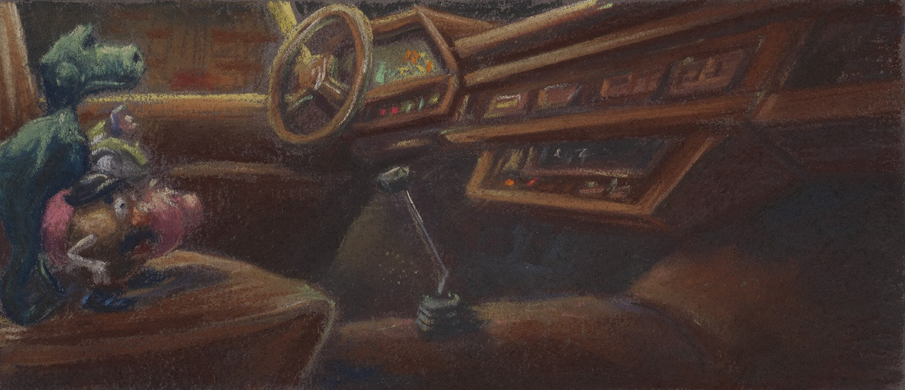
A colorscript is a sequence of small pastel drawings or paintings used to emphasize color in each scene and establish a film's visual language. Ralph Eggleston set the visual style for Toy Story with his original colorscript. Production Designer Bill Cone expanded on it for Toy Story 2. “It’s writing a symphony where the dynamics of the plot are reflected in the dynamics of light and color,” offers Cone.“The expression of light and color in storytelling is a bottomless well of inquiry. You won’t run out of ways to express mood and emotion through those qualities.”
DIRECTED BY JOHN LASSETER
CO-DIRECTED BY LEE UNKRICH, ASH BRANNON
PRODUCED BY HELENE PLOTKIN, KAREN ROBERT JACKSON
EXECUTIVE PRODUCER SARAH MCARTHUR
ORIGINAL STORY BY JOHN LASSETER, PETE DOCTER, ASH BRANNON, ANDREW STANTON
SCREENPLAY BY ANDREW STANTON, RITA HSIAO, DOUG CHAMBERLIN, CHRIS WEBB
MUSIC BY RANDY NEWMAN
FILM EDITOR EDIE BLEIMAN, DAVID IAN SALTER, LEE UNKRICH
SUPERVISING TECHNICAL DIRECTOR GALYN SUSMAN
DIRECTOR OF PHOTOGRAPHY SHARON CALAHAN
PRODUCTION DESIGNERS WILLIAM CONE, JIM PEARSON
STORY SUPERVISORS DAN JEUP, JOE RANFT
SUPERVISING ANIMATOR GLENN MCQUEEN
LAYOUT SUPERVISORS RIKKI CLELAND-HURA, EWAN JOHNSON
SET DRESSING SUPERVISOR DAVID EISENMANN
ASSOCIATE TECHNICAL DIRECTORS OREN JACOB, LARRY AUPPERLE
MODELING SUPERVISOR EBEN OSTBY
SHADING SUPERVISOR BRAD WEST
LIGHTING SUPERVISOR JEAN-CLAUDE KALACHE
RENDERING SUPERVISOR DON SCHREITERN
PRODUCTION MANAGER GRAHAM WALTERS
SOUND DESIGNER GARY RYDSTROM
EXECUTIVE MUSIC PRODUCER CHRIS MONTAN
CASTING BY RUTH LAMBERT, C.S.A. MARY HIDALGO
WOODY TOM HANKS
BUZZ LIGHTYEAR TIM ALLEN
JESSIE JOAN CUSACK
PROSPECTOR KELSEY GRAMMER
MR. POTATO HEAD DON RICKLES
SLINKY DOG JIM VARNEY
REX WALLACE SHAWN
HAMM JOHN RATZENBERGER
MRS. POTATO HEAD ESTELLE HARRIS
ANDY JOHN MORRIS
BO PEEP ANNIE POTTS
BARBIE JODI BENSON
WHEEZY JOE RANFT